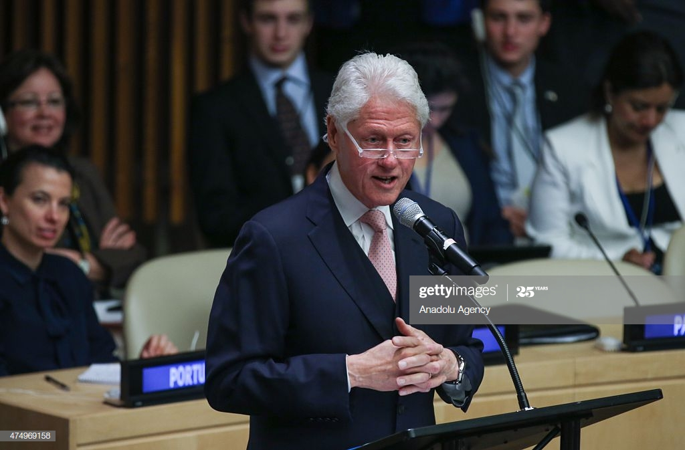
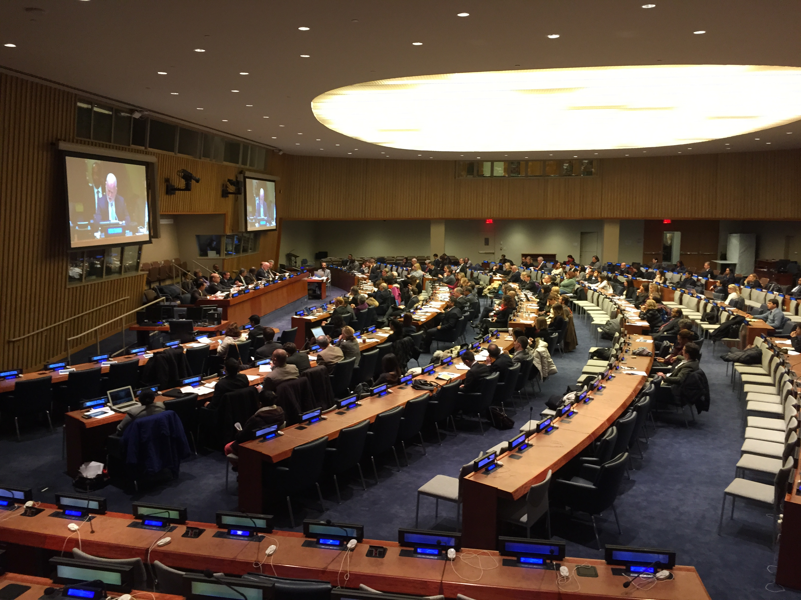

United Nations
James Baker's internship overview.
From March 2015 to August 2015, I worked directly with the former United Nations' Chief Liaison for Partnerships, Amir Dossal, to address issues related to the United Nations Sustainable Development Goals (SDGs). The SDGs are a set of goals agreed upon by the United Nations member states as a set of specific priorities they would like to achieve as a body by 2030. Specifically, I worked on Goal 14 which aims to "protect, restore and promote sustainable use of terrestrial ecosystems, sustainably manage forests, combat desertification, and halt and reverse land degradation and halt biodiversity loss."
Below are collection of publications and photographs that I produced during my internship.
Link: World Malaria Day 2015 by Jason Sabel & James Baker

